1. ภาพรวมและเป้าหมายของระบบ (System Overview)
บทบาทของระบบห้องน้ำในกระบวนการผลิตบ้านโมดูลาร์ SCG HEIM
ในบ้านสำเร็จรูปโครงสร้างเหล็กโมดูลาร์ งานห้องน้ำเป็นพื้นที่ที่มีความหนาแน่นของงานระบบสูงสุด (Highest System Density) ประกอบด้วยงานท่อประปาสุขาภิบาล, ถาดกันซึม, งานโครงเหล็กซ่อนผนัง (Concealed Framing), เคาน์เตอร์, และฝ้าเพดาน ระบบ Bathroom (BR) ใน QHeim ถูกออกแบบขึ้นเพื่อแปลงข้อมูลแบบร่างจาก AutoCAD สุขาภิบาลและสถาปัตยกรรม (DWG CAD.IN + SN) ให้กลายเป็นโมเดล 3D BIM อัจฉริยะบน SketchUp แบบ กึ่งอัตโนมัติ (Semi-Automated)
จากเดิมที่ต้องขึ้นโมเดลท่อ 3D ทีละท่อน เปลี่ยนเป็นการอ่าน Sleeve Pipe จาก CAD แล้วรันเส้นท่อ PVC และ PPR ขึ้นมาใน 3D อัตโนมัติ (Auto Run Engine)
สร้างตารางตัดเหล็ก/อลูมิเนียมสำหรับโครงเคาน์เตอร์ โครงผนังหลังชักโครก และโครงฝ้าเพดาน พร้อมระยะตัด (Cut Length) และจำนวน เพื่อส่งตัดในโรงงานได้ทันที
คำนวณพื้นที่แผ่นกันซึม Evalon Membrane พับยกขอบ 150 มม. และจำลองรอยต่อกระเบื้องแบบ Dry Lay อย่างแม่นยำ
กระบวนการไหลของข้อมูล (Conceptual Pipeline)
flowchart LR
A["AutoCAD 2D
(DWG CAD.IN + SN)"] --> B["1. CAD Import
เข้า SketchUp WCS"]
B --> C["2. Auto Run Pipes
PVC & PPR System"]
C --> D["3. Framing & Zones
Shower, Counter, WC, Floor"]
D --> E["4. Recheck Data Grid
ตรวจสอบ & แก้ไข BOQ"]
E --> F["5. Auto Shop Drawings
LayOut + Bar Cut List"]
E --> G["6. Factory BOM
CSV / Excel Export"]
2. หน้าต่างเมนูและแถบเครื่องมือ (UI Toolbar & Controllers)
แถบเครื่องมือและชุดไอคอนควบคุมระบบ Bathroom ใน SketchUp
3. กระบวนการทำงานหลัก 6 ขั้นตอน (6-Stage Conceptual Workflow)
ขั้นตอนการแปลงแบบ CAD สู่โมเดล 3D BIM และการสั่งผลิตโรงงาน
Import ไฟล์ 2D DWG จาก AutoCAD เข้าสู่ SketchUp โดยอ้างอิงจุดกำเนิด WCS (0,0,0) เดียวกัน เพื่อให้โมเดลสุขาภิบาลและสถาปัตยกรรมซ้อนทับกันพอดี:
DWG PDF. SN: เลเยอร์งานระบบสุขาภิบาล (Sleeve Pipe, Soil, Waste, Cold Water, Vent)DWG PDF. IN: เลเยอร์งานสถาปัตยกรรมภายใน (Floor Plan, Vanity Counter, Sanitary Fixtures, Tiles)
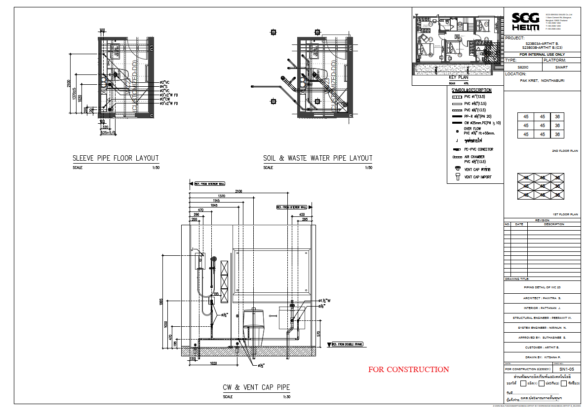
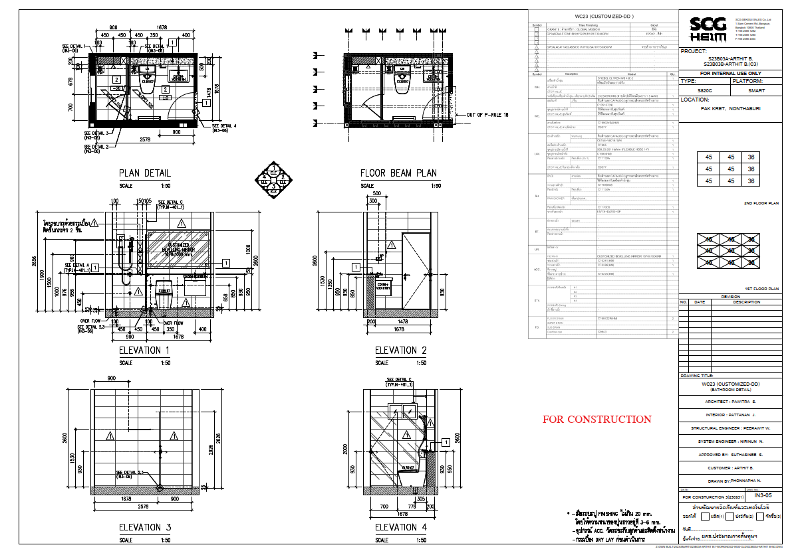
ระบบสแกนตำแหน่ง Sleeve Pipe จากแปลน CAD แล้วสร้างท่อ 3D ขึ้นมาในโมเดล พร้อมอุปกรณ์ข้อต่อข้องอ 90°, 45°, สามทาง (Tee), และเกลียวนอก-ใน วิ่งขึ้นสู่ระดับอุปกรณ์สุขภัณฑ์โดยอัตโนมัติ:
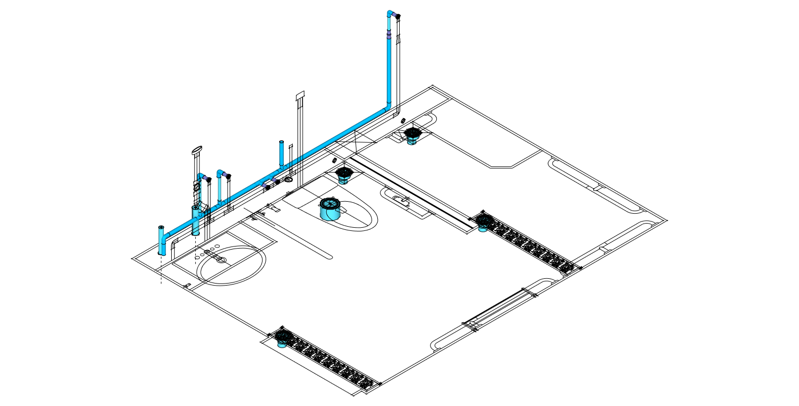
วางมาร์กเกอร์และแอตทริบิวต์ระบุชนิดพื้น (AD, BD, DD) คำนวณถาดรองพื้นดรอป
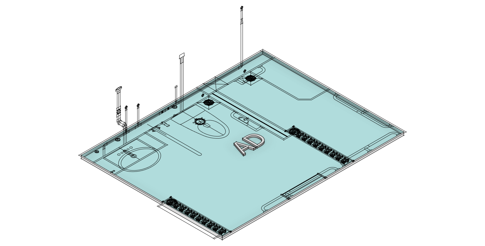
แบ่งโซนเปียก-แห้ง และเจาะช่องสบู่ Soap: high 970 กว้าง 900 mm
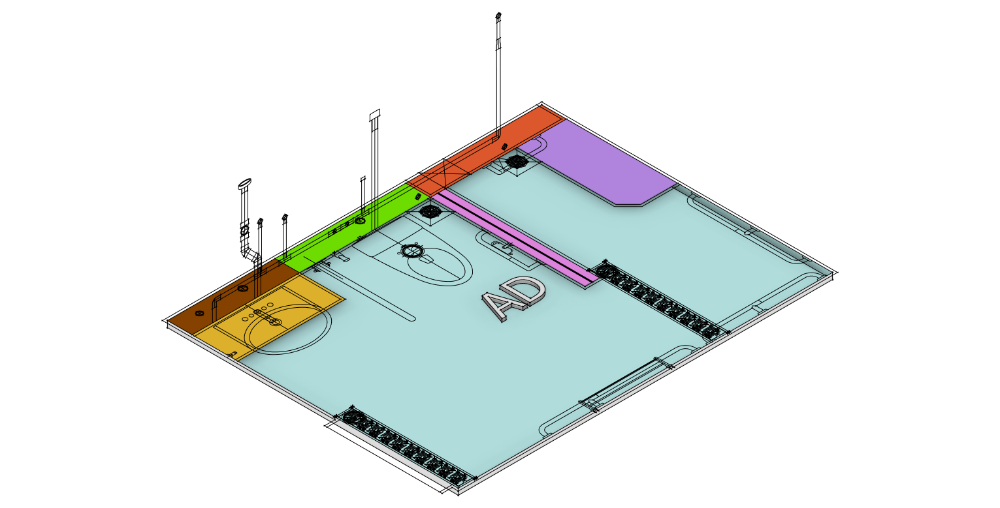
วางโครง Smartframe 33.3 เคาน์เตอร์ท็อป +850 mm กระจก 1570x1000 mm
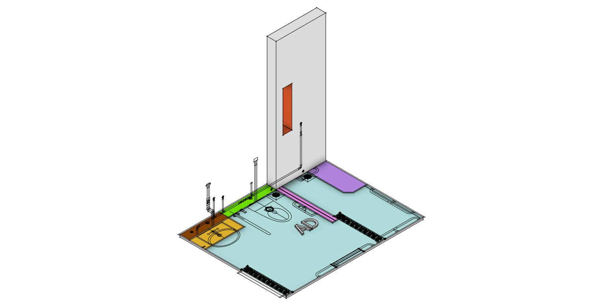
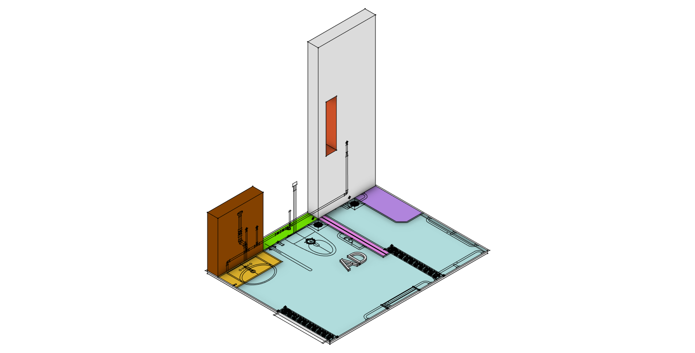
- BOQ Engine: ดึงข้อมูลจาก 3D Components คำนวณปริมาณวัสดุสำหรับงานโครงเฟรม, ท่อ, และฝ้าเพดาน พร้อมระบบ Undo/Redo
- Auto Data Grid: แสดงตารางชิ้นส่วนทั้งหมดเพื่อตรวจสอบความถูกต้อง และสามารถ Edit แก้ไขข้อมูลที่ผิดพลาดได้ทันทีก่อนส่งออก
- Message Alert: มีระบบแจ้งเตือนอัตโนมัติเมื่อมีการอัปเดตรหัสชิ้นส่วนมาตรฐานใหม่ (
IM SB New)
ระบบสร้างเอกสารสำหรับสั่งผลิตโรงงานได้ 2 รูปแบบทันที:
📊 Export BOM (CSV / Excel):
แยกตามหมวดหมู่งาน: งานระบบท่อ (PVC/PPR), งานเฟรม (Aluminium, Box 50x40, U-Frame SB_8), งานฝ้าเพดาน (C-Line, Clip Lock), และงานเคมีภัณฑ์ (แผ่นกันซึม Evalon, ปูนกาว, อีพ็อกซี่)
📐 Export Drawing อัตโนมัติ:
ใช้ Auto Template HEIM สร้างภาพ 2D Top-View, Elevation รูปด้าน 1-4, บอกระยะ Auto Dimension, และคำนวณตารางตัดเหล็ก Bar Cut List แสดงรหัสท่อน ความยาว และจำนวนชิ้น
4. ตารางถอดแบบรายการวัสดุ 4 หมวดหลัก (BOM & Materials Matrix)
แคตตาล็อกรายการวัสดุและเกณฑ์การคำนวณปริมาณงานห้องน้ำ
4.1 หมวดที่ 1: งานระบบท่อประปาและสุขาภิบาล (Piping System)
| รายการวัสดุ | มาตรฐาน / สเปก | หน้าที่ / ตำแหน่งติดตั้ง | หน่วย BOM |
|---|---|---|---|
| ท่อ PVC น้ำดี/น้ำทิ้ง | PVC ตราช้าง 13.5 (ขนาด 1", 3/4", 1/2") | ท่อน้ำดีและท่อน้ำทิ้ง Floor Drain | เมตร (m.) |
| ท่อ PVC โสโครก | PVC 4" ชั้น 8.5/13.5 | ท่อส้วมจากโถสุขภัณฑ์ลงสู่ Shaft | เมตร (m.) |
| ท่อ PP-R น้ำดี | PP-R Class 20 (ขนาด 25mm / 1/2") | ท่อน้ำดีแรงดันสูงฝังผนัง | เมตร (m.) |
| ข้อต่อตรง / ข้องอ 90° / 45° | PVC / PPR ตามขนาดท่อ | จุดเปลี่ยนทิศทางท่อ | ชุด (EA) |
| สามทาง (Tee) / ข้อต่อสะพาน | PVC / PPR | แยกแขนงท่อน้ำดีและท่อระบายอากาศ | ชุด (EA) |
| ข้อต่อเกลียวนอก-ใน / วาล์ว | ทองเหลือง / PPR เกลียวโลหะ | จุดต่อสุขภัณฑ์และวาล์วผสม | ชุด (EA) |
4.2 หมวดที่ 2: งานโครงสร้างเฟรมและตารางตัดบาร์ (Framing & Bar Cut List)
| รหัสชิ้นส่วน | ชื่อชิ้นส่วน | สเปก / ขนาดหน้าตัด | ตำแหน่งการใช้งาน |
|---|---|---|---|
| Smartframe 33.3 | โครงสร้างสมาร์ทเฟรม | C-Section กัลวาไนซ์ 33.3 mm | โครงรับเคาน์เตอร์อ่างล้างหน้า |
| BOX / U / C | กล่องเฟรมรับแรง | เหล็กกล่อง 50x40 mm ลายกันลื่น | โครงผนังหลังโถสุขภัณฑ์, โครงส่วนอาบน้ำ |
| U-Frame (SB_8) | โครงตัวยูรับแผ่น | ราง U กัลวาไนซ์สำหรับแผ่น 8 mm | ขอบจบงานผนังเบาห้องน้ำ |
| Aluminium Frame | กรอบอลูมิเนียม Extrusion | รางอลูมิเนียม T-Slot | โครงฉากกั้นอาบน้ำกระจกนิรภัย |
4.3 หมวดฝ้าเพดาน (Ceiling System)
| Part No. | ชื่อวัสดุ | จำนวน |
|---|---|---|
| AAGN01xxx | Angle Steel L รอบผนัง | 2-6 |
| AAGN02xxx | Pro-Line ติดแผ่น GB | 6-8 |
| AAGN03000 | HF DCB (L=220mm) | 24 |
| AAGN03010 | Cf Clip Lock | 25 |
4.4 หมวดกันซึมและเคมีภัณฑ์
| วัสดุ | คุณสมบัติ | หน่วย |
|---|---|---|
| แผ่นกันซึม Evalon | เมมเบรน EVA-PVC ยกขอบ 150 mm | ม.² (m²) |
| กาวอีพ็อกซี่ (Epoxy) | กาวสองส่วนผสมยึดโครงสร้าง | กก. (kg) |
| ปูนกาวปูกระเบื้อง | ปูนกาวสูตรทนชื้นห้องน้ำ | ถุง (Bag) |
| ยาแนวกันราดำ | ยาแนวผสม Microban | ถุง (Bag) |
งาน Finishing: การคำนวณหา ปูนกาว, ปูนฉาบ, และเคมีภัณฑ์อื่นๆ
นิยามหลักของงาน Finishing ใน QHeim: การถอดพื้นที่ผิวเพื่อคำนวณวัสดุประสาน ปิดผิว และกันซึม
คิดจากพื้นที่ปูกระเบื้องพื้นและผนังห้องน้ำ (ตร.ม.) × อัตราการใช้ 4-5 กก./ตร.ม. (หวีเกรียง 3-5 มม.) เผื่อตัด 5% คำนวณเป็นจำนวนถุง (20 กก./ถุง)
- ปูนฉาบรอยต่อแผ่น: คิดจากความยาวรอยต่อแผ่น (ม.) × 0.2 กก./ม. พร้อมเทปผ้าใยแก้ว
- สกิมโค้ทฉาบผิวบาง: 1.2-1.5 กก./ตร.ม./หนา 1 มม. ก่อนทาสี
คิดจากพื้นที่ถาดรองพื้นดรอป + พื้นที่พับยกขอบบัวสูง 150-200 มม. รอบห้อง + ระยะซ้อนทับ Lap รอยต่อ 100 มม. (เผื่อรวม 15%)
- กาวอีพ็อกซี่: 0.15-0.20 กก./จุดต่อโครงสร้าง
- ยาแนวกันราดำ: 0.25-0.35 กก./ตร.ม. กระเบื้อง
- ซิลิโคนสุขภัณฑ์: 1 หลอด / 8-10 เมตรแนวรอยต่อ
5. คลังภาพร่างแนวคิดและแบบก่อสร้าง (Conceptual Gallery & Shop Drawings)
แบบ Shop Drawing มาตรฐานโรงงานและภาพจำลองกระบวนการทำงาน
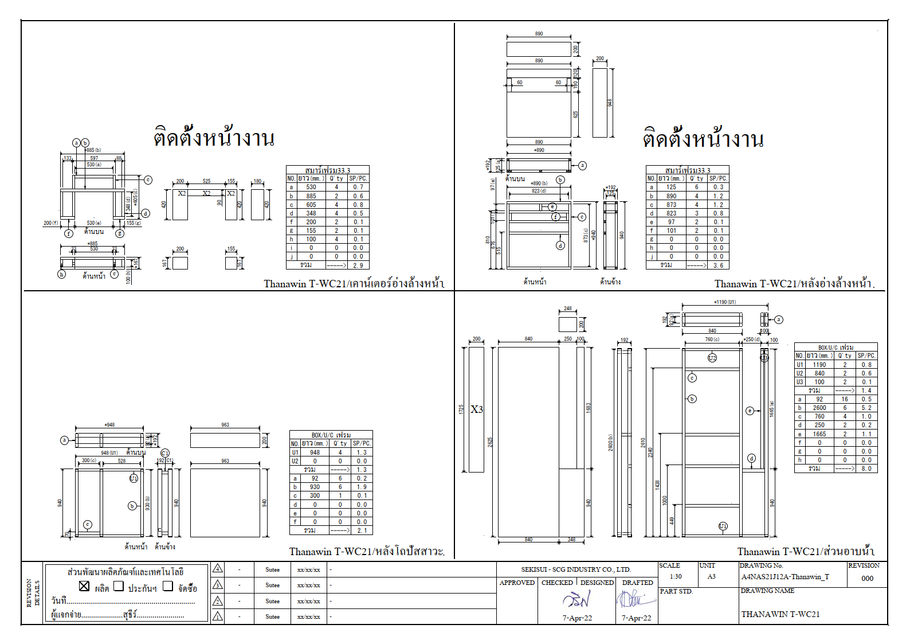
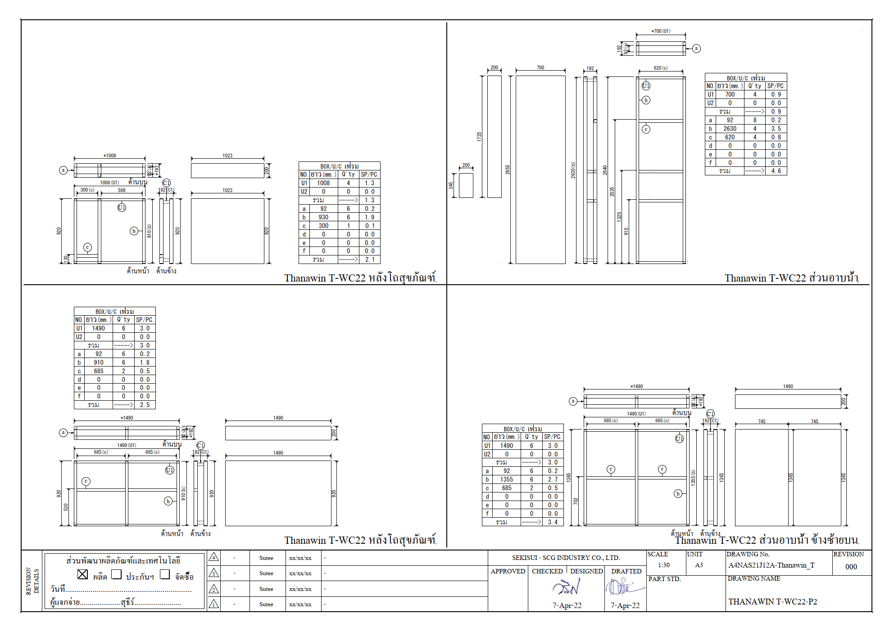
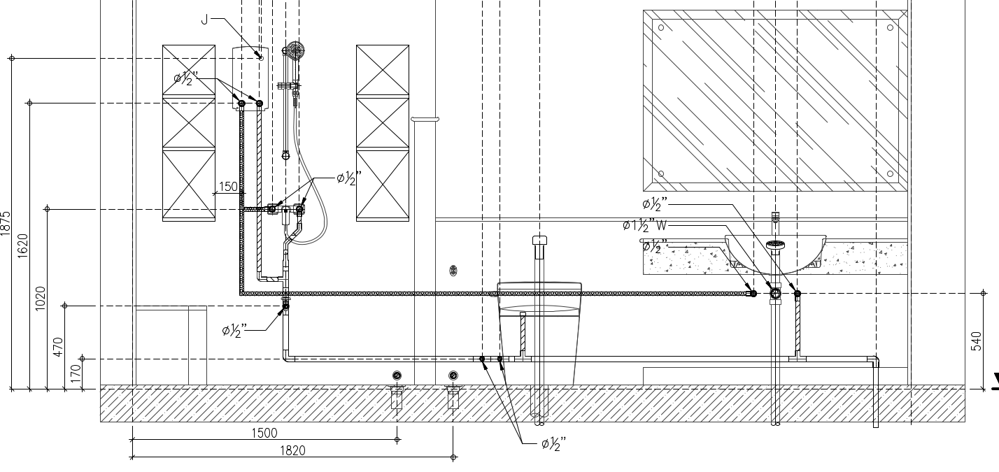
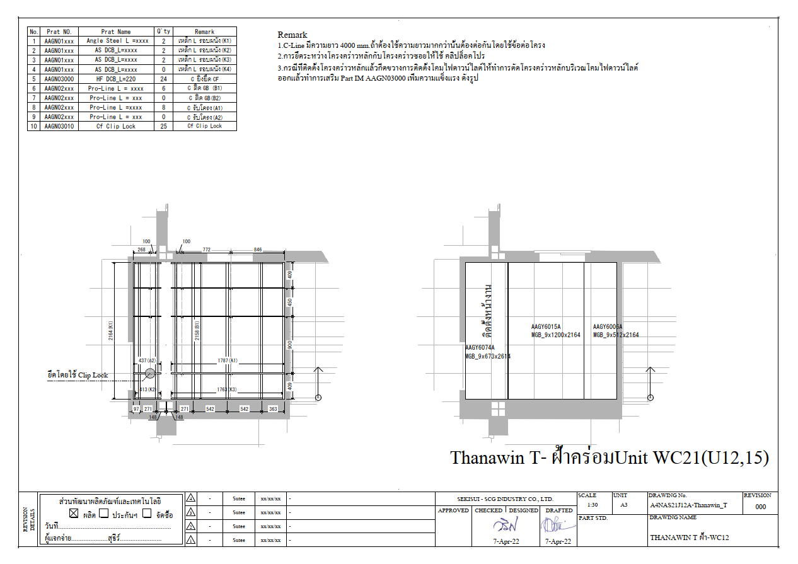
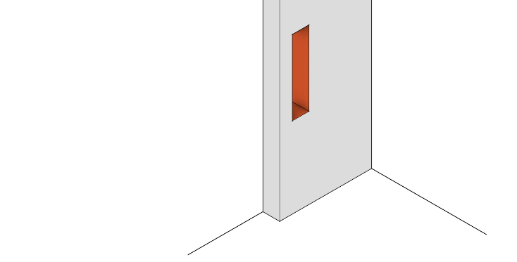
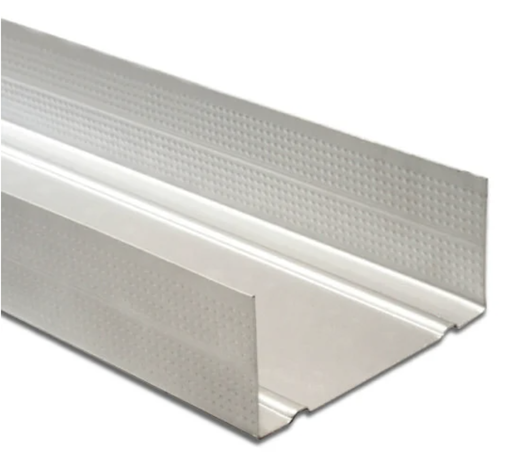
ข้อต่อตรง, ข้องอ 90°/45°, สามทาง, ข้อต่อเกลียวนอก-ใน, ข้อต่อยูเนี่ยน, ข้อต่อสะพานหลบคาน
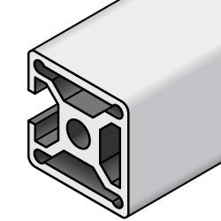
ม้วนแผ่นกันซึมคุณภาพสูงสำหรับปูถาดรองพื้นห้องน้ำและยกขอบกันน้ำรั่วซึม